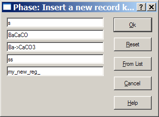
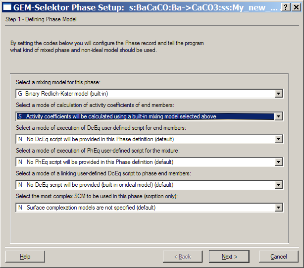
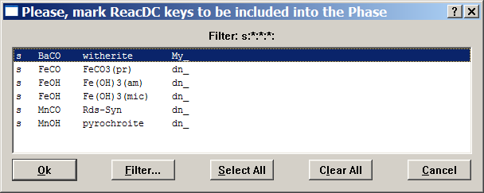
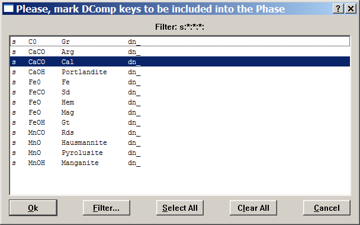
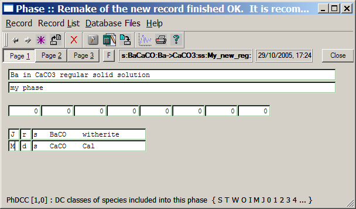
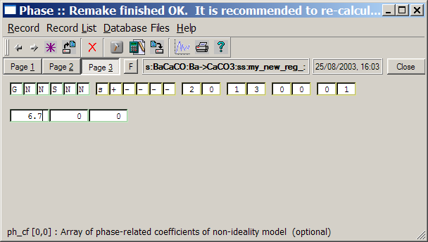

Previous Page Back to Start Page
(35)
Creating Phase records for non-ideal solid solutions
Most
carbonate solid
solutions are non-ideal mixtures that can be described reasonably well
using
a regular Margules model (more in Activity-Coeffs.pdf manual)
with one positive interaction parameter per binary mixture. The
magnitude of this parameter increases with the difference of cationic
radii.
To model such
solid solutions in GEM-Selektor, one has to provide Phase records for
them. Let us create one for the (Ba,Ca)CO3 regular solid
solution that requires a regular Margules model to calculate activity
coefficients of end-members. As the difference in cationic radii of Ba+2
and Ca+2 is significant (0.035 nm), the interaction
parameter a also has a significant
value ( a = 6.7, predicted), so barium can admix into calcite
to small
extent only (< 1%). Therefore, one must use a non-ideal
model in
this case, otherwise the limited miscibility cannot be reproduced in
modelled
equilibria. Luckily, there are two built-in binary solid solution
models
in the GEM-Selektor code (Margules and Guggenheim) and either can be
used
for a regular binary mixture.
Now, proceed
with executing the "Record"
"New(Clone)..." menu command. Modify the key of the record to be
created as shown below and click "Ok":

In the appearing "Phase Setup" wizard, change the first field to 'G' (binary Redlich-Kister (Guggenheim ) mixing model) and the second field to 'S' (use built-in calculations) as shown below:

When done,
click "Next >" to proceed. There is nothing to change in the second
and third wizard pages, so click "Next >" again and then "Finish".
The program will show a list of available ReacDC records and ask to
mark those to be
included in the phase definition. Mark the "Witherite" entry (as shown
below)
and click on the "Ok" button to proceed.

The next dialog will
appear asking you to
mark DComp records to be linked to Phase definition. Mark there the
entry for calcite ("Cal"), as shown below, and click on the "Ok"
button.

This brings you back to the "Phase" window. There, you will have to edit comment lines and to set 'M' and 'J' codes in the PhDCC column, as shown:

The 'M' code indicates that
calcite is the host ("Major") end-member, expected to appear in mole
fraction not far from unity, and the 'J' code denotes
witherite as a trace ("Junior") end-member, to be present normally in
minor mole fractions less than a few percent.
When ready
with Page 1, switch to Page 3 and enter there the interaction parameter
a = 6.7, as shown below:

When ready, click on the "Save current record" toolbar
button  or execute the "Record" "Save" menu command to save the Phase record
into the database file.
or execute the "Record" "Save" menu command to save the Phase record
into the database file.
Built-in simple non-ideal
mixing models available in GEM-Selektor code facilitate setting up
chemical systems involving many practically interesting binary or
ternary solid solutions. Yet, the variety of possible mixing models is
large, so the GEMS code also allows the user to define an arbitrary
mixing model via creating a Phase record
with mathematical script(s) describing how to calculate activity
coefficients of end-members. This requires somewhat more time and
experience (though a template math script library is available to
facilitate the process). You can find more details about Phase
scripting in the Phase module
manual.
Now, you can close the Phase window and proceed to the next page of this tutorial.
Back to main GEMS-PSI page